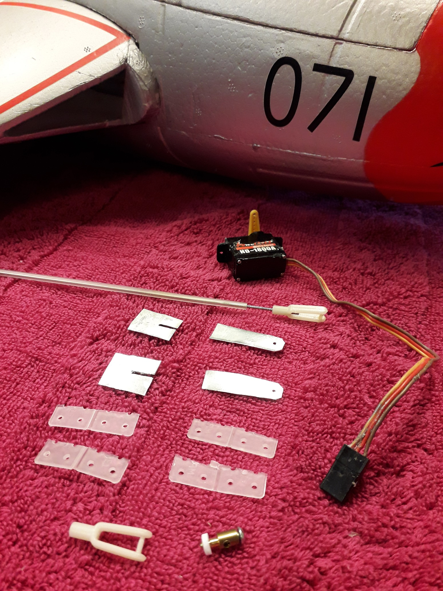
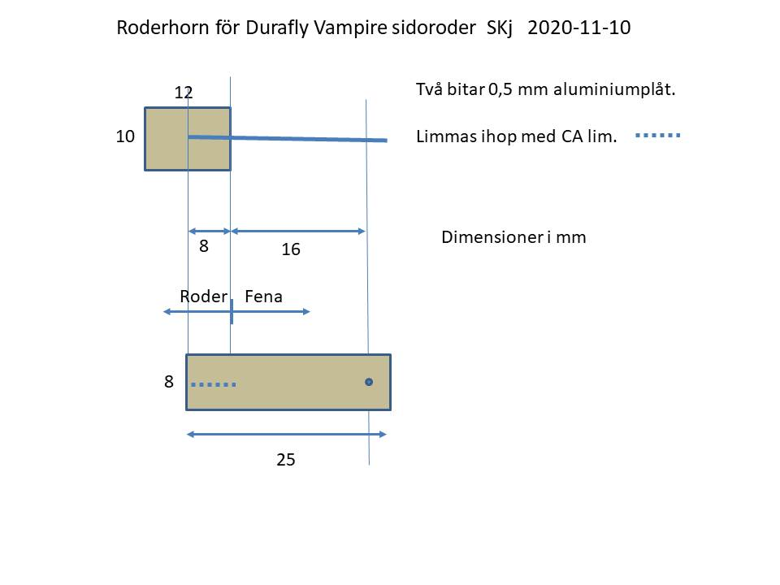
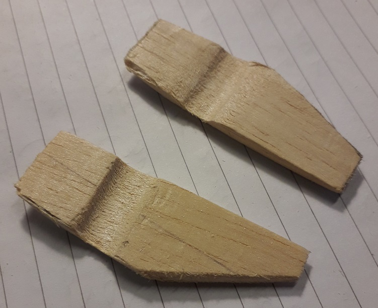
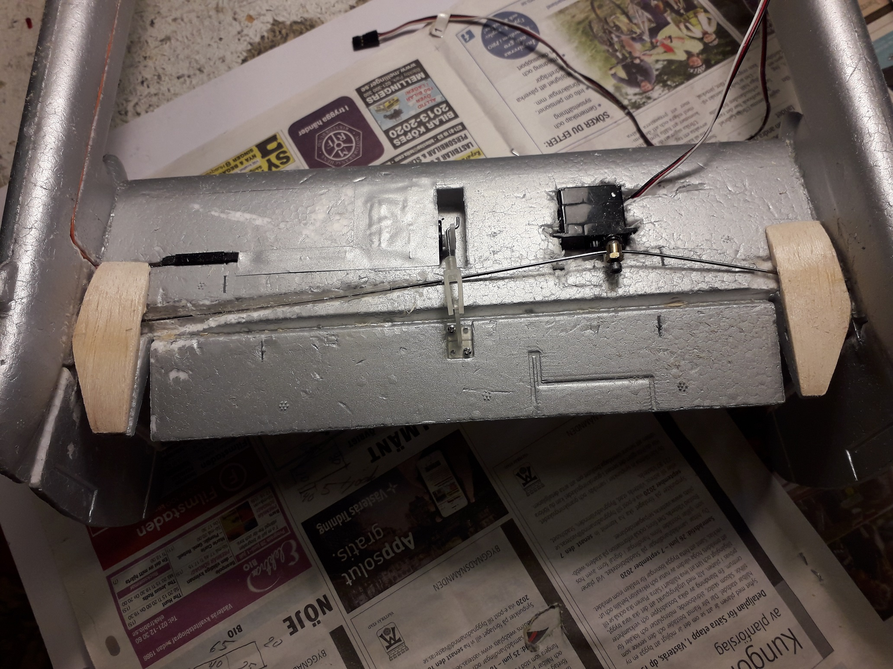
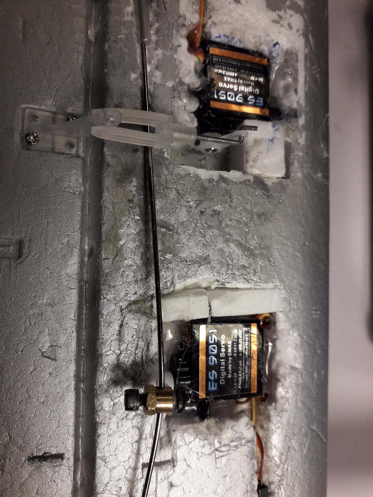
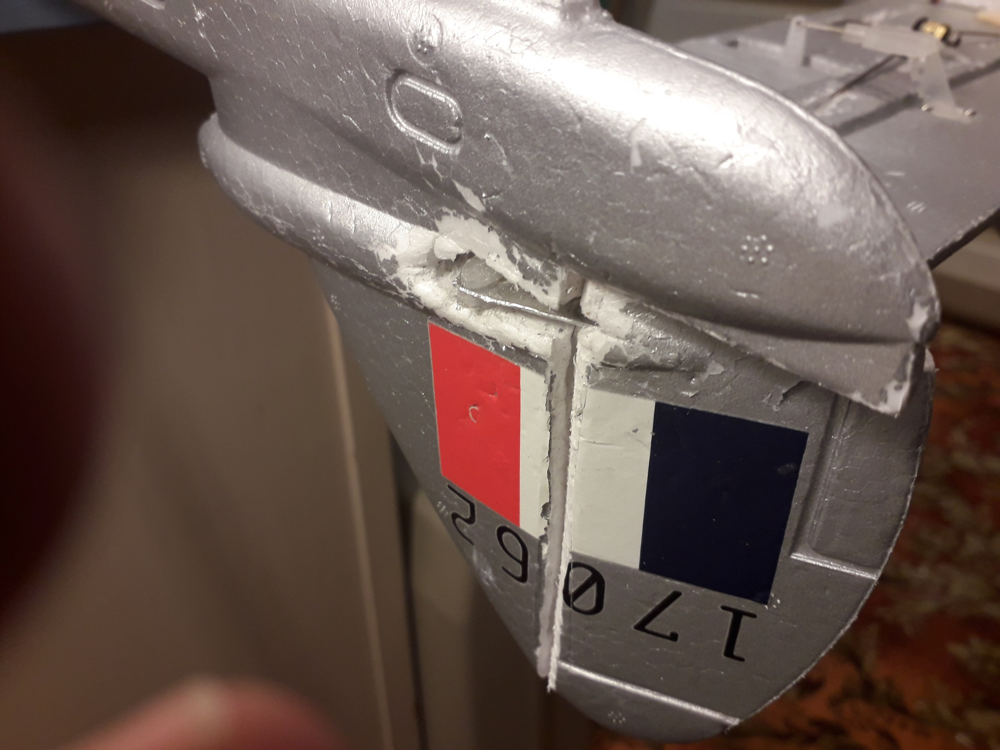
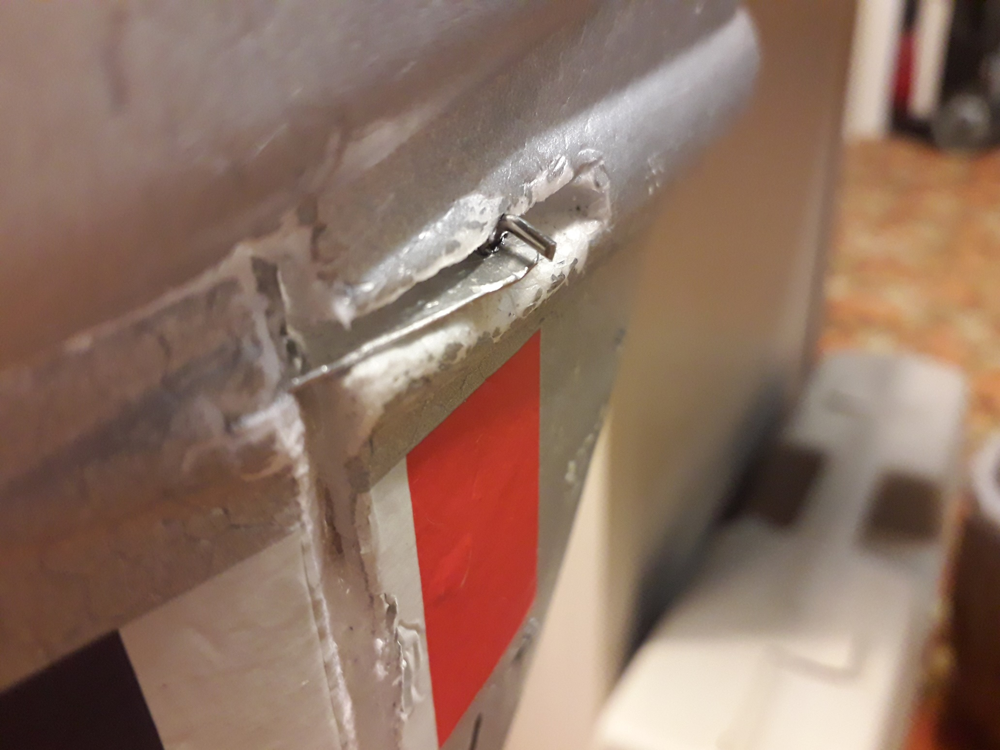
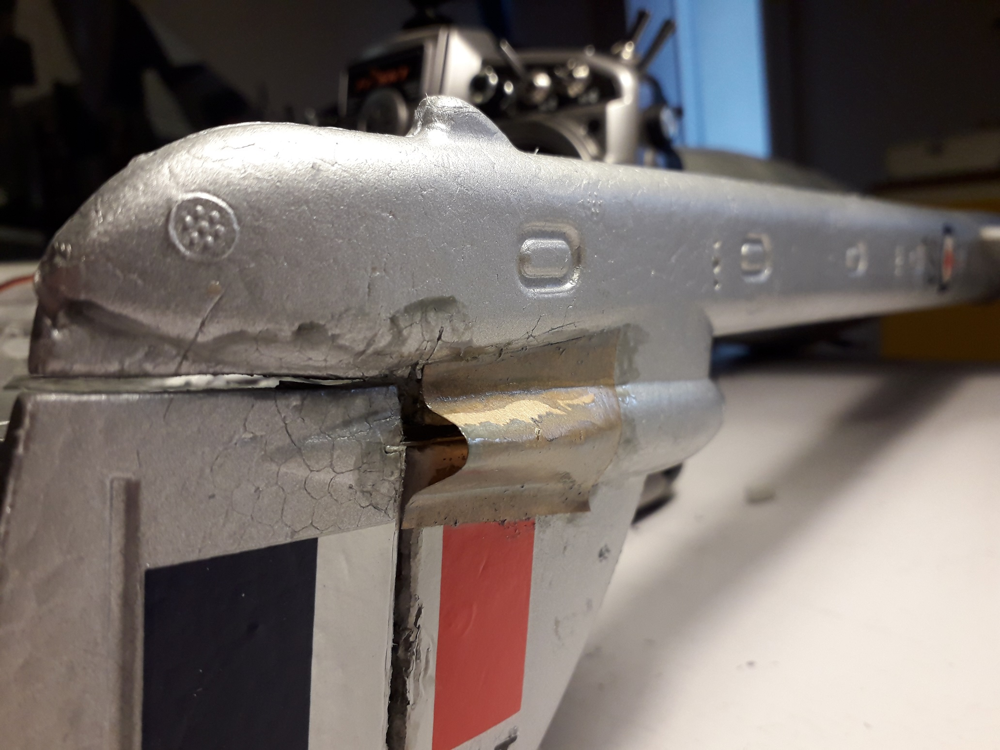
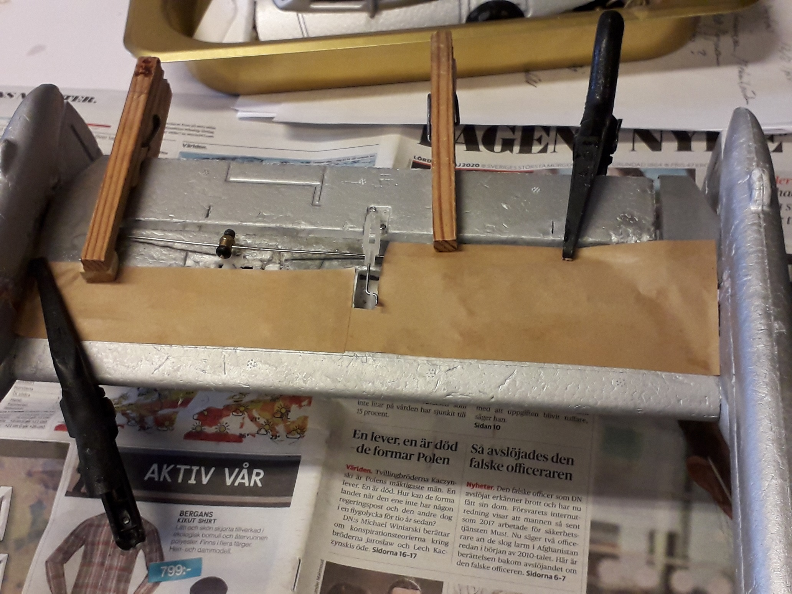
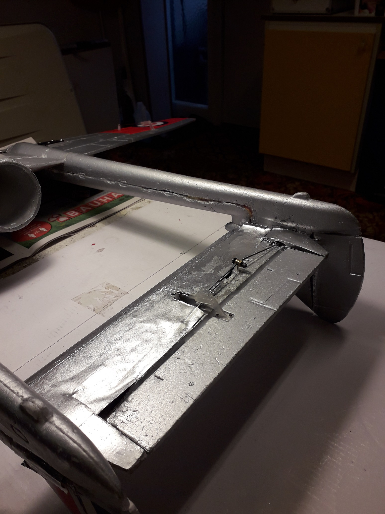

Modellen har, som standard, inga sidoroder.
Vampire i fullskala har två.
Jag har flugit en Durafly Vampire under flera år och saknat
sidoroder.
Nu har jag köpt en andra Durafly
Vampire(Canadian version) och själv
utrustat den med två fungerande sidoroder.
Sidorodrets
konstruktion Ett extra servo,
monterat i stabilisatorn, styr båda sidorodren med en stötstång
.
Rodergångjärnen består av 2 halva nylongångjärn per roder.
Roderhornen,som jag tillverkat av aluminiumplåt och CA lim,
pekar rakt fram, inuti stjärtbommen.

Roderhorn ritning

De bakre delarna av stabilisatorn, bredvid höjdrodret, behöver
förstärkas kring hålet för
stötstången till rodren. Se bilderna nedan.


För att få
tyngdpunkten längre fram har ja g satt in 4,1 grams servon
för sidoroder och höjdroder.

Höger stötstångsanslutning

Vänster stötstångsanslutning

Skyddskåpa av brunpapper

Servoinstallationen döljs med brunpapper och vitlim/vatten
50/50.

Målat och klart!

Materiallista
1 st stötstång av pianotråd 1 mm, gängad i
ena änden
1 st plaströr till ovanstående
1 st servolänk till ovanstående gänga
1 st E/Z connector (Stötstångfäste)
2 st digitala servon
ES9051 EMax ES9051D 0.8 kpxcm, 4.3 g,
0.09 s
Brunpapper och vitlim
Balsa till förstärkning av stabben
Aluminiumplåt 0,5 mm till roderhorn
4 st gångjärn
Färg, silver eller aluminium
Byggbeskrivning
Byt höjdroderservot till ett ES9051.
Skär loss sidorodren från fenorna. Tillverka
roderhornen av aluminiumplåten. (CA -lim) Limma
fast roderhornen och gångjärnen i rodren. Skär
ut plats för roderhornen i fenorna ( =
slutet av stjärtbommarna) Gör en grop i stabben för
sidoroderservot och montera servot tillfälligt. Gör hål
för stötstången med hölje så att det passar servots
läge och limma fast höljet i stabben. Skruva på servolänken på
stötstången (halvägs) och montera stötstångsfästet.
Limma fast vänster sidoroder i fenan med gångjärnen och
koppla servolänken till roderhornet.
Montera höger sidoroder tillfälligt i fenan och bestäm var
stötstången skall bockas
för att båda rodren skall få rätt utslag.
Lossa vänster servolänk och bocka stötstången i höger ände. Limma
fast höger sidoroder i fenan med gångjärnen
samtidigt som roderhornet är kopplat till
stötstången.
Fäst vänster servolänk igen och justera vid behov.
Montera sidoroderservot permanent.
Tillverka balsaförstärkningarna till stabben och
limma fast dom.
Tillverka och fäst skyddskåporna
av brunpapper.
Täck servoinstallationen
med brunpapper och vitlim/vatten 50/50.